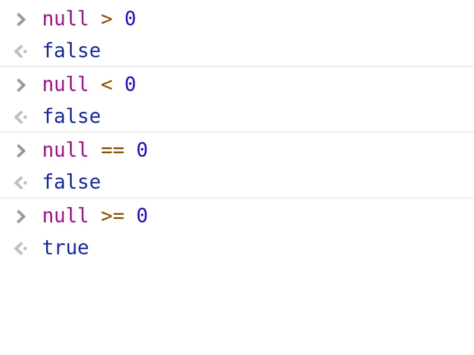

UNIDAD 2 - Fundamentos de JavaScript
1. Sintaxis General de JavaScript
Sintaxis de ECMAScript
JavaScript, también conocido como ECMAScript, tiene una sintaxis similar a lenguajes como C++ y Java.
Comentarios de una sola línea
Usa // para escribir comentarios en una sola línea.
Comentarios de varias líneas
Usa /* ... */ para escribir comentarios que abarquen varias líneas.
Puntos y comas
El punto y coma (;) al final de una línea es opcional, pero se recomienda para evitar posibles problemas durante la ejecución del código.
Palabras reservadas
No utilices palabras clave reservadas para nombres de variables, ya que tienen un significado especial en el lenguaje.
Lista de palabras reservadas: https://developer.mozilla.org/en-US/docs/Web/JavaScript/Reference/Lexical_grammar#reserved_words
Tipado débil
JavaScript es un lenguaje de tipado débil, lo que significa que no necesitas declarar explícitamente los tipos de datos.
let variable = 10; // No es necesario declarar el tipo, es un número
variable = "texto"; // Ahora es una cadena
Gramática léxica: https://developer.mozilla.org/en-US/docs/Web/JavaScript/Reference/Lexical_grammar
2. Mensajes en consola y alertas en el navegador
2.1 Consola de depuración
Podemos ver la consola en el navegador seleccionando la opción "Inspeccionar". Ya dependiendo del navegador habrá uno u otros atajos de teclado. En Chrome se abre Ctrl+mayus+i, o con click derecho+inspeccionar, o con F10. Si tienes un navegador distinto, te toca investigar.
Podemos interactuar con el objeto de consola del sistema invocando sus métodos.
console.log('¡Hola Mundo!'); // mensaje general
console.info('Este es un mensaje informativo'); // mensaje informativo
console.warn('¡Ten cuidado!'); // mensaje de advertencia
console.error('Error fatal'); // mensaje de error
Declaración debugger
La declaración debugger se puede utilizar para pausar la ejecución de un script con fines de depuración.
Usando la declaración debugger, puedes pausar la ejecución del código en un punto específico para inspeccionar el estado actual de las variables y la pila de llamadas.
function add(a, b) {
debugger; // La ejecución se detendrá aquí
//si las herramientas de desarrollo están abiertas
return a + b;
}
add(2, 3);
debugger, se pausará, permitiéndote usar las herramientas de desarrollo del navegador para inspeccionar el estado actual y depurar tu código de manera efectiva.
2.2 Alertas, Prompt y Confirmaciones
Estos métodos se utilizan para mostrar alertas en el navegador, solicitar datos y confirmar acciones con un cuadro de diálogo de OK/Cancelar.
alert()
El método alert() muestra un cuadro de alerta con un mensaje especificado y un botón OK.
prompt()
El método prompt() muestra un cuadro de diálogo con un mensaje solicitando al usuario que ingrese algún texto. Devuelve el texto ingresado por el usuario o null si el usuario presionó Cancelar.
let userInput = prompt("Por favor, introduce tu nombre:");
console.log("El usuario ingresó: " + userInput);
confirm()
El método confirm() muestra un cuadro de diálogo con un mensaje especificado, junto con un botón OK y un botón Cancelar. Devuelve true si el usuario presionó OK, y false si presionó Cancelar.
let userConfirmed = confirm("¿Realmente deseas eliminar este elemento?");
if (userConfirmed) {
console.log("El usuario confirmó la acción.");
} else {
console.log("El usuario canceló la acción.");
}
Mejores Prácticas
Debemos intentar evitar el uso de estos métodos siempre que sea posible. Interrumpen la experiencia del usuario y generalmente se consideran una mala práctica en el desarrollo web moderno. Los utilizaremos por ahora, ya que aún no conocemos otras formas de comunicación dinámica con el usuario.
3. Declaración de variables
Podemos declarar variables de tres maneras:
var
La forma tradicional de declarar una variable. No se recomienda hoy en día.
Las variables declaradas con var dentro de una función son de ámbito de función, lo que significa que son accesibles a lo largo de la función en la que se declaran, pero no fuera de ella.
var creará variables de ámbito global cuando se declaren fuera de una función o en el ámbito global.
var globalVar = "Soy accesible desde cualquier lugar en el script";
function testVar() {
var functionVar = "Soy accesible solo dentro de esta función";
console.log(globalVar); // Muestra: Soy accesible desde cualquier lugar en el script
console.log(functionVar); // Muestra: Soy accesible solo dentro de esta función
}
console.log(globalVar); // Muestra: Soy accesible desde cualquier lugar en el script
// console.log(functionVar); // Error de referencia no capturado: functionVar no está definida
let
Una variable que solo es accesible dentro del bloque, sentencia o expresión donde se declara. let tiene ámbito de bloque.
function testLet() {
let blockVar = "Soy accesible solo dentro de este bloque";
if (true) {
let innerBlockVar = "Soy accesible solo dentro de este bloque interno";
console.log(blockVar); // Muestra: Soy accesible solo dentro de este bloque
console.log(innerBlockVar); // Muestra: Soy accesible solo dentro de este bloque interno
}
console.log(blockVar); // Muestra: Soy accesible solo dentro de este bloque
// console.log(innerBlockVar); // Error de referencia no capturado: innerBlockVar no está definida
}
const
Una constante que solo es accesible dentro del bloque, sentencia o expresión donde se declara. Las constantes no se pueden reasignar después de su declaración inicial. const tiene ámbito de bloque.
function testConst() {
const constantVar = "Soy una constante dentro de este bloque";
if (true) {
const innerConstantVar = "Soy una constante dentro de este bloque interno";
console.log(constantVar); // Muestra: Soy una constante dentro de este bloque
console.log(innerConstantVar); // Muestra: Soy una constante dentro de este bloque interno
}
console.log(constantVar); // Muestra: Soy una constante dentro de este bloque
// console.log(innerConstantVar); // Error de referencia no capturado: innerConstantVar no está definida
// constantVar = "Nuevo valor"; // Error de tipo no capturado: Asignación a una variable constante.
}
Mejores Prácticas
Se recomienda usar let o const dependiendo de si el valor de la variable debe cambiar o no.
- Usa
letpara variables que cambiarán. - Usa
constpara variables que no deben cambiar.
let variableMutable = "Puedo cambiar";
variableMutable = "He cambiado";
const variableInmutable = "No puedo cambiar";
// variableInmutable = "Intentando cambiar"; // Error de tipo no capturado: Asignación a una variable constante.
4. Tipos de Datos Primitivos
JavaScript tiene varios tipos de datos primitivos:
-
Number (Número): Representa tanto números enteros como números de punto flotante.
-
String (Cadena): Representa una secuencia de caracteres (texto).
-
Boolean (Booleano): Representa una entidad lógica y puede tener dos valores:
trueofalse. -
Undefined (Indefinido): Indica que una variable ha sido declarada pero aún no se le ha asignado un valor.
-
Null (Nulo): Representa la ausencia intencional de cualquier valor de objeto. Es uno de los valores primitivos de JavaScript y se trata como un valor "falso" en operaciones booleanas.
Nota:
- Undefined:
undefinedsignifica que una variable ha sido declarada pero aún no se le ha asignado un valor. - Null:
nulles un valor asignado. Puede ser asignado a una variable como representación de la ausencia de valor.
Estos son los bloques de construcción básicos de los datos en JavaScript. Entender y usar estos tipos de datos correctamente es crucial para programar de manera efectiva en JavaScript.
4.1 Tipo Número
En JavaScript, el tipo de datos number representa tanto números enteros como números de punto flotante.
Características de los Números
- Números Positivos o Negativos:
- Números con o sin decimales
let entero = 34;
let puntoFlotante = 34.4;
let cero = 0;
let flotanteNegativo = -9.45;
let numeroGrande = 150000000;
Operaciones Aritméticas
Puedes realizar varias operaciones aritméticas con números:
- Adición
+ - Sustracción
- - Multiplicación
* - División
/ - Módulo
%: Devuelve el resto de una división. - Exponenciación
**: Eleva el primer operando a la potencia del segundo operando. - Incremento
++: Aumenta el valor de una variable en 1. - Decremento
--: Disminuye el valor de una variable en 1.
let suma = 4 + 5; // 9
let resta = 10 - 3; // 7
let producto = 4 * 3; // 12
let cociente = 12 / 4; // 3
let potencia = 2 ** 3; // 8
let contador = 0;
contador++; // el contador ahora es 1
contador--; // el contador ahora es 0
Operaciones de Comparación
También puedes comparar números utilizando varios operadores de comparación:
- Menor que
< - Mayor que
> - Menor o igual que
<= - Mayor o igual que
>= - Igual a
== - Estrictamente igual a
=== - Distinto de
!= - Estrictamente distinto de
!==
let esMenorQue = 5 < 10; // true
let esMayorQue = 10 > 5; // true
let esMenorOIgualQue = 5 <= 5; // true
let esMayorOIgualQue = 10 >= 10; // true
let esIgual = 5 == '5'; // true (coerción de tipos)
let esEstrictamenteIgual = 5 === 5; // true
let esEstrictamenteIgualConTiposDiferentes = 5 === '5'; // false (sin coerción de tipos)
let esDistinto = 5 != '5'; // false (coerción de tipos)
let esEstrictamenteDistinto = 5 !== '5'; // true (sin coerción de tipos)
Métodos Adicionales para Números en el Objeto Math
JavaScript también proporciona varios métodos incorporados para trabajar con números a través del Objeto Math.
Ejercicio Práctico 2a
En JavaScript no hay un operador para calcular la división entera. ¿Puedes implementar una forma de obtener esta operación utilizando las operaciones enumeradas arriba?
Ejemplos:
- 10 // 3 = 3
- 13 // -3 = -4
Más sobre el tipo número
typeof: Tipo de la variableNaN: Not-a-Number (No es un número)isNaN(): Comprueba si el valor es NaN.toString(): Convierte un número a cadena.toFixed(): Formatea un número a un número fijo de decimales
// Tipo de la variable
let tipoDeNumero = typeof 123; // 'number'
let tipoDeCadena = typeof '123'; // 'string'
// NaN (No es un número)
let noEsUnNumero = NaN;
let chequeoNaN1 = isNaN(123); // false
let chequeoNaN2 = isNaN(NaN); // true
let chequeoNaN3 = isNaN('Hola'); // true
// Convertir número a cadena
let numeroACadena = (123).toString(); // '123'
// Formatear número a decimales fijos
let decimalFijo = (123.456).toFixed(2); // '123.46'
4.2 Tipo Cadena
En JavaScript, el tipo de datos string se utiliza para representar datos textuales.
Características de las Cadenas
- Cadenas: Una secuencia de caracteres encerrada entre comillas.
- Comillas dobles:
"Hola mundo" - Comillas simples:
'Hola mundo'
Operaciones con Cadenas
- Concatenación: Combinar múltiples cadenas en una sola.
- Ejemplo:
cadena = 'Hola' + ' mundo'da como resultado'Hola mundo'
- Ejemplo:
- Operaciones de Comparación: Comparar cadenas.
- Igual a (
==) - Estrictamente igual a (
===) - Distinto de (
!=)
- Igual a (
- Otros Métodos Útiles: Se pueden encontrar en el Objeto String
// Características de las cadenas
let cadena1 = "Hola mundo";
let cadena2 = 'Hola mundo';
// Concatenación
let saludo = 'Hola' + ' mundo'; // 'Hola mundo'
// Operaciones de Comparación
let esIgual = 'Hola' == 'Hola'; // true
let esEstrictamenteIgual = 'Hola' === 'Hola'; // true
let esEstrictamenteIgual2 = '123' === 132; // false
let esDistinto = 'Hola' != 'Mundo'; // true
// Otros métodos útiles
let longitudDeCadena = saludo.length; // 10
let enMayusculas = saludo.toUpperCase(); // 'HOLA MUNDO'
let enMinusculas = saludo.toLowerCase(); // 'hola mundo'
let incluyePalabra = saludo.includes('mundo'); // true
let dividirCadena = saludo.split(' '); // ['Hola', 'mundo']
let subCadena = saludo.substring(1, 4); // 'ola' substring(inicio, fin+1)
let caracterEn = saludo.charAt(1); // 'o'
let indiceDelCaracter = saludo.indexOf('m'); // 5
let cadenaReemplazada = saludo.replace('mundo', 'todos'); // 'Hola todos'
let cadenaRecortada = ' Hola mundo '.trim(); // 'Hola mundo'
Literales de Plantilla
Los literales de plantilla, también conocidos como cadenas de plantilla, son una característica de JavaScript que permite la interpolación de expresiones y la creación de cadenas en varias líneas. Se encierran entre comillas invertidas (`) en lugar de comillas simples o dobles.
Características de los Literales de Plantilla
- Interpolación de Cadenas: Insertar expresiones dentro de una cadena usando la sintaxis
${expresión}.
let nombre = "Juan";
let apellido = "Pérez";
let edad = 30;
let presentacion = `Mi nombre es ${nombre} ${apellido} y tengo ${edad} años.`;
let resultado = `2 + 2 es ${2 + 2}`; // "2 + 2 es 4"
- Cadenas Multilínea: Crear cadenas que ocupan varias líneas.
Ejercicio Práctico 2b: Trabajando con Cadenas en JavaScript
Sigue estos pasos para completar el ejercicio:
- Concatenación y Literales de Plantilla:
- Crea dos variables de cadena,
nombreyapellido. - Concáténalos usando tanto el operador
+como literales de plantilla para formar un nombre completo.
- Crea dos variables de cadena,
- Métodos de Cadenas:
- Usa los métodos
.toUpperCase()y.toLowerCase()para cambiar el caso del nombre completo. - Extrae una subcadena del nombre completo usando los métodos
substring()yslice().
- Usa los métodos
- Interpolación de Cadenas:
- Crea una cadena multilínea usando literales de plantilla que incluya el nombre completo y una dirección.
- Dividiendo y Recortando Cadenas:
- Crea una cadena que incluya una lista de elementos separados por comas.
- Divide la cadena en un arreglo y recorta los espacios en blanco de cada elemento.
- Chequeo y Conversión:
- Crea una variable que incluya un número como cadena.
- Verifica si es un número usando
isNaN()y conviértelo a número. - Usa
.toString()para convertir un número de nuevo a una cadena. - Usa
.toFixed()para formatear un número a dos decimales.
4.3 Tipo Booleano
- Solo acepta dos valores:
trueofalse - Es útil para verificar el estado de la aplicación
-
Se recomienda que su nombre defina el estado positivo
- Ejemplo:
userIsLogged,itemFound,errorFound
- Ejemplo:
-
Boolean(value);devuelve el valor booleano de una condición o variable.
Boolean()
Boolean(value); devuelve el valor booleano de una condición o variable.
Verdadero vs Falso
| Verdadero | Falso |
|---|---|
| 1 | 0, -0 |
"Cualquiera" |
"" |
| 3.14 | NaN |
100 > 5 |
null |
1 < 100 |
undefined |
'1' == 1 |
'1' === 1 |
// Ejemplo 1: Usando Boolean() para obtener el valor booleano
console.log(Boolean(1)); // true
console.log(Boolean(0)); // false
console.log(Boolean("Cualquiera")); // true
console.log(Boolean("")); // false
// Ejemplo 2: Usando expresiones
console.log(100 > 5); // true
console.log(1 < 100); // true
console.log('1' == 1); // true
console.log('1' === 1); // false
// Ejemplo 3: Verificación de undefined y null
let a;
console.log(Boolean(a)); // false
let b = null;
console.log(Boolean(b)); // false
// Ejemplo 4: Verificación de NaN
let c = NaN;
console.log(Boolean(c)); // false
console.log(isNaN(c)); // true
// Ejemplo 5: Combinando múltiples verificaciones
let value = "Hola";
if (value && typeof value === "string") {
console.log("El valor es una cadena no vacía"); // Esto se imprimirá
}
let number = 0;
if (!number) {
console.log("El número es cero o falso"); // Esto se imprimirá
}
4.4 Tipos Undefined y Null
En JavaScript, undefined y null son dos tipos distintos que representan la ausencia de valor o no existencia. A menudo se confunden entre sí pero tienen significados y casos de uso diferentes.
Undefined
- Tipo:
undefined - Descripción: Una variable que ha sido declarada pero aún no se le ha asignado un valor tiene el valor
undefined. - Ejemplo:
Null
- Tipo:
object - Descripción:
nulles un valor de asignación que se puede utilizar para representar la ausencia de valor o de objeto. Se establece explícitamente por el programador para indicar "sin valor". - Ejemplo:
Diferencias Clave
-
Tipo:
undefined: El tipo deundefinedesundefined.null: El tipo denullesobject(esto es un error histórico en JavaScript, pero permanece para compatibilidad con versiones anteriores).
-
Valor por Defecto:
undefinedes el valor por defecto para variables no inicializadas.nulles una asignación explícita para indicar un valor vacío o inexistente.
-
Uso:
- Usa
undefinedpara verificar si una variable ha sido declarada pero aún no se le ha asignado un valor. - Usa
nullpara significar intencionalmente que una variable debería estar vacía.
- Usa
Ejemplos
// Ejemplo de Undefined
let x;
console.log(x); // Salida: undefined
// Ejemplo de Null
let y = null;
console.log(y); // Salida: null
// Verificación de tipos
console.log(typeof x); // Salida: undefined
console.log(typeof y); // Salida: object
¿Puedes resolver el mayor enigma de JS?

5. Sentencias de Control
5.1 Sentencias Condicionales
if...else
Las sentencias condicionales permiten la ejecución de bloques de código específicos basados en ciertas condiciones. Las sentencias condicionales más comunes son if, else if y else.
Ejemplos de uso:
let number = 10;
if (number > 0) {
console.log("El número es positivo.");
} else if (number < 0) {
console.log("El número es negativo.");
} else {
console.log("El número es cero.");
}
switch
Una sentencia switch evalúa una variable o expresión y compara su valor con uno de varios casos posibles. Cada caso corresponde a un bloque de código específico que se ejecuta cuando se encuentra una coincidencia. Si no se encuentra ninguna coincidencia, se puede ejecutar un caso default opcional.
Ejemplos de uso:
JavaScript
let fruit = 'apple';
switch (fruit) {
case 'manzana':
console.log("Esto es una manzana.");
break;
case 'platano':
console.log("Esto es un plátano.");
break;
case 'naranja':
console.log("Esto es una naranja.");
break;
case 'zanahoria':
console.log("Cuidao que se lo come Manolo.");
break;
default:
console.log("Fruta desconocida.");
}

Operador Condicional (ternario)
El operador condicional ternario es una forma concisa de realizar evaluaciones condicionales. Toma tres operandos: una condición, un resultado para verdadero y un resultado para falso. La sintaxis es:
condición ? expresión_si_verdadera : expresión_si_falsa
Ejemplos de uso:
let age = 18;
let canVote = (age >= 18) ? "Sí, puedes votar." : "No, no puedes votar.";
console.log(canVote);
5.2 Bucles o Iteraciones
for (bucle tradicional con contador)
El bucle for es un bucle tradicional que itera con un contador. Se usa para repetir un bloque de código un número determinado de veces.
Ejemplos de uso:
for (let i = 0; i < 5; i++) {
console.log(i);
}
// Contando hacia atrás en pasos de 5 unidades
for (let i = 50; i >= 0; i -= 5) {
console.log(i);
}
for..in (itera sobre propiedades de un objeto)
El bucle for..in itera sobre las propiedades enumerables de un objeto. Se usa para recorrer las propiedades del objeto.
Ejemplos de uso:
let person = {name: 'John', age: 30, city: 'New York'};
for (let key in person) {
console.log(key + ': ' + person[key]);
}
for..of (ES6) (itera sobre una colección de objetos)
El bucle for..of, introducido en ES6, itera sobre objetos iterables como arrays, cadenas y otras colecciones.
Ejemplos de uso:
forEach (método para iterar sobre una colección de objetos)
Sin embargo, en JavaScript, la forma más común de iterar sobre arrays de objetos es utilizando el método forEach. Este método ejecuta una función proporcionada una vez para cada elemento del array, lo que lo hace más conveniente y legible para estas tareas.
const users = [ //sabemos lo que es name y age
{ name: 'John', age: 15 },
{ name: 'Jane', age: 25 },
{ name: 'Jim', age: 35 },
{ name: 'Manolo', age: 2 },
];
users.forEach(user => {
console.log(`${user.name} tiene ${user.age} años.`); //fijaos que estamos usando literales
if (user.age >= 18) { //le estamos pasando una función, y dentro podemos poner el codigo que nos dé la gana
console.log(`El usuario ${user.name} es mayor de edad, y puede salir al recreo`);
} else {
console.log(`El usuario ${user.name} es menor de edad, y necesita que le firmen su padres`);
}
});
while (bucle while tradicional)
El bucle while repite un bloque de código mientras una condición especificada sea verdadera.
let i = 0;
while (i > 0.5) { //cuidado con la expresión que ponemos aqui, no vayamos a crear un bucle infinito
console.log(i);
i = Math.rand();
}
console.log(`Se encontró un número aleatorio mayor que 0.5: ${i}`);
6. Objetos Nativos de JavaScript
JavaScript proporciona varios objetos integrados que permiten a los desarrolladores trabajar con diferentes tipos de datos, realizar tareas comunes, manipular el DOM y manejar errores. Estos objetos son parte del lenguaje JavaScript y están disponibles globalmente.

Los objetos nativos de JavaScript se pueden categorizar en dos tipos según su contexto de uso y origen:
Objetos Independientes del Navegador (También disponibles en Node.js)
Estos objetos son parte de la especificación del lenguaje JavaScript y se pueden usar tanto en el navegador como en entornos del lado del servidor (como Node.js). Generalmente comienzan con una letra mayúscula (y son los marcados en rojo en la figura anterior):
- Math: Proporciona constantes y funciones matemáticas.
- Number: Representa valores numéricos y proporciona métodos para operaciones numéricas.
- Date: Representa fechas y horas.
- Array: Representa una colección tipo lista de elementos.
Estos objetos están implementados como parte del propio lenguaje JavaScript y no dependen de la presencia de un entorno de navegador.
Objetos Dependientes del Navegador (Entorno del Lado del Cliente)
Estos objetos son específicos del entorno del navegador y no están disponibles en JavaScript del lado del servidor (Node.js). Generalmente comienzan con una letra minúscula:
- window: Representa la ventana global del navegador y actúa como el objeto global en JavaScript del lado del cliente.
- document: Representa el documento HTML cargado en la ventana del navegador.
- navigator: Proporciona información sobre el navegador y el sistema operativo del cliente.
- localStorage / sessionStorage: Proporciona mecanismos de almacenamiento dentro del navegador para persistir datos.
Estos objetos interactúan directamente con el Modelo de Objetos del Documento (DOM) del navegador y son esenciales para la programación del lado del cliente y el desarrollo de aplicaciones web.
Contextos de Uso
- Node.js: Los objetos independientes del navegador (por ejemplo, Math, Number, Date) se pueden usar en aplicaciones Node.js sin dependencia de un entorno de navegador.
- Navegador: Los objetos dependientes del navegador (por ejemplo, window, document, navigator) son específicos del entorno del lado del cliente y requieren un navegador web para su ejecución.
Vamos a explicar los más útiles para nosotros en el alcance de este curso.
6.1 Objeto Date
- El objeto Date en JavaScript se utiliza para trabajar con fechas y horas.
- Permite crear y manipular fechas, obtener y establecer varios componentes de la fecha (como año, mes, día, hora, minuto, segundo) y realizar operaciones como formato y aritmética.
- Internamente, se almacena el número de milisegundos desde las 00:00:00 UTC del 1 de enero de 1970.
Constructor:
let currentDate = new Date(); // Fecha y hora actuales
let specificDate = new Date(1626176282855); // Ejemplo con número de milisegundos
let customDate = new Date(2023, 5, 12, 14, 30, 0, 0); // 12 de junio de 2023, 14:30:00
getFullYear(), getMonth(), getDate(), getDay(), getHours(), getMinutes(), getSeconds(), getMilliseconds(): Recupera varios componentes de la fecha.
let now = new Date();
let year = now.getFullYear();
let month = now.getMonth(); // Índice 0 (Enero es 0)
let day = now.getDate();
let hours = now.getHours();
let minutes = now.getMinutes();
let seconds = now.getSeconds();
setFullYear(), setMonth(), setDate(), setHours(), setMinutes(), setSeconds(), setMilliseconds(): Establece varios componentes de la fecha.
day = new Date(2000, 0, 1); // 1 de enero de 2000
birthday.setFullYear(2001); // Cambiar el año a 2001
toDateString(), toISOString(), toLocaleDateString(), toLocaleTimeString(): Convierte objetos de fecha en diferentes representaciones de cadena.
let today = new Date();
let dateString = today.toDateString(); // "Tue Jul 13 2024"
let isoString = today.toISOString(); // "2024-07-13T12:30:00.000Z"
let localeDateString = today.toLocaleDateString(); // Depende del local
Trabajando con fechas
Aquí tienes un ejemplo que muestra cómo crear un objeto Date, acceder a sus componentes y formatear su salida:
let now = new Date();
let year = now.getFullYear();
let month = now.getMonth(); // Índice 0 (Julio es 6)
let day = now.getDate();
let hours = now.getHours();
let minutes = now.getMinutes();
let seconds = now.getSeconds();
console.log(`Fecha y hora actuales: ${day}/${month + 1}/${year} ${hours}:${minutes}:${seconds}`);
Aquí está el ejemplo en JavaScript comparando dos fechas:
// Crear dos fechas
let date1 = new Date('2023-07-13');
let date2 = new Date('2023-07-14');
// Comparar las fechas
if (date1 < date2) {
console.log(`${date1.toDateString()} es antes que ${date2.toDateString()}`);
} else if (date1 > date2) {
console.log(`${date1.toDateString()} es después de ${date2.toDateString()}`);
} else {
console.log(`${date1.toDateString()} y ${date2.toDateString()} son iguales`);
}
6.2 Objeto Math
El objeto Math en JavaScript proporciona constantes y funciones matemáticas, permitiéndote realizar tareas matemáticas sin crear explícitamente una instancia del objeto Math. Incluye métodos para redondeo, trigonometría, logaritmos, exponenciación, algunas constantes como el número PI, y más.
Math.abs(): Valor absolutoMath.ceil(): Redondeo hacia arribaMath.floor(): Redondeo hacia abajoMath.round(): Redondeo al entero más cercanoMath.max(): Valor máximoMath.min(): Valor mínimoMath.random(): Número aleatorio entre 0 y 1Math.sqrt(): Raíz cuadradaMath.PI: Número PI
let absoluteValue = Math.abs(-5); // 5
let roundedUp = Math.ceil(4.2); // 5
let roundedDown = Math.floor(4.8); // 4
let rounded = Math.round(4.5); // 5
let roundedDownExample = Math.round(4.4); // 4
let max = Math.max(1, 2, 3); // 3
let min = Math.min(1, 2, 3); // 1
let random = Math.random(); // ej., 0.543
let squareRoot = Math.sqrt(16); // 4
// Además, el objeto Math contiene algunas constantes útiles como PI o el número E
let piNumber = Math.PI; // 3.1415......
6.4 Objeto String
El objeto String es un envoltorio alrededor del tipo de dato primitivo string de JavaScript. Proporciona varios métodos y propiedades para trabajar con cadenas de texto de manera efectiva.
Creación de Objetos String
En JavaScript, puedes crear una cadena primitiva directamente o usar el constructor del objeto String para crear un objeto String:
// Cadena primitiva
let mensaje = '¡Hola, Mundo!';
// Usando el constructor del objeto String
let otroMensaje = new String('¡Hola, Mundo!');
Métodos y propiedades útiles
length: Devuelve la longitud de la cadena.charAt(index): Devuelve el carácter en el índice especificado.concat(str1, str2, ...): Concatena una o más cadenas al final de la cadena que llama al método y devuelve una nueva cadena.toUpperCase(): Convierte todos los caracteres a mayúsculas.toLowerCase(): Convierte todos los caracteres a minúsculas.indexOf(searchValue, startIndex): Devuelve el índice de la primera aparición desearchValueen la cadena, comenzando la búsqueda enstartIndex.substring(startIndex, endIndex): Devuelve una nueva subcadena desdestartIndexhastaendIndex(excluyendoendIndex).slice(startIndex, endIndex): Extrae una sección de la cadena y la devuelve como una nueva cadena.split(separator): Divide la cadena en un array de subcadenas basadas en unseparatorespecificado.
Ejemplos de uso:
Estos métodos ya han sido utilizados en el Tipo de Dato String Primitivo.
6.5 Objetos de Interacción con el Navegador
Además de los objetos presentados anteriormente, hay otros tipos de objetos que permiten la manipulación de características específicas del navegador:
- navigator: Proporciona información sobre el navegador y el sistema operativo del cliente.
- screen: Representa las propiedades de la pantalla del usuario.
- window: Representa la ventana global del navegador y actúa como el objeto global en JavaScript del lado del cliente.
- document: Representa el documento HTML cargado en la ventana del navegador.
- history: Proporciona el historial de sesiones del navegador (páginas visitadas en la pestaña/ventana actual).
navigator
Para identificar las características de la plataforma en la que se ejecuta una aplicación web, puedes usar propiedades y métodos proporcionados por el objeto navigator en JavaScript:
-
Tipo de Navegador y Versión:
- Usa
navigator.userAgentpara obtener la cadena del User-Agent, que incluye información sobre el tipo de navegador y la versión.
- Usa
-
Sistema Operativo:
- Usa
navigator.platformpara recuperar la plataforma en la que se está ejecutando el navegador (por ejemplo, "Win32", "Linux x86_64", "MacIntel").
- Usa
-
Geolocalización:
- Utiliza la API de Geolocalización para solicitar y obtener la ubicación geográfica actual del dispositivo, siempre que el usuario conceda permiso.
Ejemplo de código JavaScript:
// User Agent
let infoNavegador = navigator.userAgent;
console.log(`User-Agent: ${infoNavegador}`);
// Información de la Plataforma
let infoPlataforma = navigator.platform;
console.log(`Plataforma: ${infoPlataforma}`);
// Geolocalización
if ('geolocation' in navigator) {
navigator.geolocation.getCurrentPosition(position => {
console.log('Latitud:', position.coords.latitude);
console.log('Longitud:', position.coords.longitude);
}, error => {
console.error('Error al obtener la geolocalización:', error);
});
} else {
console.error('La geolocalización no es soportada por este navegador.');
}
screen
El objeto screen en JavaScript representa la pantalla del usuario y proporciona propiedades de solo lectura para recuperar información sobre sus características.
Propiedades del Objeto screen
screen.width: Devuelve el ancho de la pantalla del usuario en píxeles.screen.height: Devuelve la altura de la pantalla del usuario en píxeles.screen.availWidth: Devuelve el ancho disponible de la pantalla del usuario (excluyendo las barras de tareas del sistema operativo, etc.) en píxeles.screen.availHeight: Devuelve la altura disponible de la pantalla del usuario (excluyendo las barras de tareas del sistema operativo, etc.) en píxeles.screen.colorDepth: Devuelve la profundidad de color de la paleta para mostrar imágenes en la pantalla del usuario.screen.pixelDepth: Devuelve la profundidad de bits del búfer de píxeles de la pantalla del usuario.
Estas propiedades permiten que las aplicaciones web adapten su contenido o comportamiento en función de las dimensiones y capacidades de la pantalla del usuario, mejorando la experiencia del usuario.
Aquí hay un ejemplo simple que demuestra cómo acceder y usar algunas de estas propiedades en JavaScript:
console.log(`Ancho de la pantalla: ${screen.width}px`);
console.log(`Altura de la pantalla: ${screen.height}px`);
console.log(`Ancho disponible de la pantalla: ${screen.availWidth}px`);
console.log(`Altura disponible de la pantalla: ${screen.availHeight}px`);
console.log(`Profundidad de color: ${screen.colorDepth} bits`);
console.log(`Profundidad de píxeles: ${screen.pixelDepth} bits`);
window
El objeto window se considera uno de los objetos más importantes en JavaScript por varias razones:
-
Gestión de Ventanas: Permite gestionar ventanas del navegador y proporciona métodos para manipular e interactuar con ellas.
-
Objeto Implícito: El objeto
windowes implícito, lo que significa que no necesitas referenciarlo explícitamente para acceder a objetos y propiedades anidados dentro de su jerarquía. Por ejemplo,window.documentse refiere directamente al objetodocumentsin necesidad de mencionar explícitamentewindow.
document
El objeto document en JavaScript representa la página web actual cargada en la ventana del navegador. Proporciona acceso al DOM (Modelo de Objetos del Documento) de la página, permitiendo a los desarrolladores manipular su contenido, estructura y estilos de manera dinámica.
Características Clave del Objeto document:
-
Manipulación del DOM: Los desarrolladores pueden acceder y modificar elementos dentro de la página web usando métodos como
getElementById,querySelectory propiedades comotextContent,innerHTML. -
Manejo de Eventos: Permite adjuntar escuchadores de eventos a elementos y responder a interacciones del usuario u otros eventos en la página.
-
Actualizaciones Dinámicas: Permite a los scripts actualizar dinámicamente el contenido de la página en función de la entrada del usuario, respuestas del servidor u otras condiciones.
Ejemplo de Manipulación del DOM:
// Accediendo a un elemento por su ID y cambiando su contenido
const elementoEncabezado = document.getElementById('header');
elementoEncabezado.textContent = '¡Bienvenidos a nuestro sitio web!';
history
En JavaScript, el objeto history proporciona métodos y propiedades para navegar por el historial de navegación del usuario. Permite almacenar referencias a las páginas web visitadas y facilita la navegación entre ellas usando una estructura tipo lista.
Características Clave del Objeto history:
-
history.length: Devuelve el número de entradas en la pila del historial de navegación. -
history.back(): Regresa una página en el historial de sesión. Equivalente a hacer clic en el botón de retroceso del navegador. -
history.forward(): Avanza una página en el historial de sesión. Equivalente a hacer clic en el botón de avance del navegador. -
history.go(n): Carga una página específica del historial de sesión, dondenpuede ser un número entero positivo o negativo. Los valores negativos mueven hacia atrás, y los valores positivos avanzan.
Ejemplo de Uso:
// Navegando hacia atrás y hacia adelante en el historial
function irAtras() {
window.history.back();
}
function irAdelante() {
window.history.forward();
}
// Accediendo a la longitud de la pila del historial
let longitudHistorial = window.history.length;
console.log(`Número de páginas en el historial: ${longitudHistorial}`);
7. Funciones
Una función en programación es un bloque reutilizable de código que realiza una tarea específica. Puede recibir entradas, procesarlas y devolver una salida. Las funciones son bloques fundamentales en la programación, permitiendo un código modular, legible y mantenible.
Características Clave de las Funciones:
- Modularidad: Las funciones permiten dividir el código en piezas más pequeñas y
manejables, cada una realizando una tarea específica. 2. Reusabilidad: Una vez definida, una función puede ser llamada múltiples veces dentro de un programa, reduciendo la redundancia. 3. Abstracción: Las funciones permiten encapsular operaciones complejas, ocultando los detalles y exponiendo solo las interfaces necesarias. 4. Mantenibilidad: Las funciones facilitan la actualización y gestión del código. Los cambios realizados dentro de una función no afectan otras partes del código que dependen de ella.
Estructura Básica de una Función:
- Declaración de Función: Define la función y especifica su nombre, parámetros y cuerpo.
- Llamada a Función: Ejecuta la función haciendo referencia a su nombre y pasando los argumentos necesarios. Opcionalmente, podemos guardar el valor que devuelve la función.
Ejemplo en JavaScript:
Nota que en JavaScript no declaramos el tipo de los parámetros ni el valor de retorno.
// Declaración de Función
function saludar(nombre) {
return `¡Hola, ${nombre}!`;
}
// Llamada a la Función
let mensaje = saludar('Alice');
console.log(mensaje); // Salida: ¡Hola, Alice!
7.1 Funciones Globales en JavaScript
Las funciones globales en JavaScript son funciones integradas que son parte del objeto global y pueden ser llamadas desde cualquier parte de tu código. Están disponibles tanto en el entorno del navegador como en Node.js. Aquí hay algunas de las funciones globales más comúnmente utilizadas:
-
parseInt(string, radix)- Analiza una cadena y devuelve un entero en la base especificada.
- Ejemplo:
-
parseFloat(string)- Analiza una cadena y devuelve un número de punto flotante.
- Ejemplo:
-
isNaN(value)- Determina si un valor es NaN (No es un Número).
- Ejemplo:
-
isFinite(value)- Determina si un valor es un número finito.
- Ejemplo:
-
eval(string)- Evalúa código JavaScript representado como una cadena.
- Ejemplo:
-
encodeURI(uri)- Codifica un Identificador de Recurso Uniforme (URI) escapando ciertos caracteres.
- Ejemplo:
-
encodeURIComponent(uriComponent)- Codifica un componente URI escapando ciertos caracteres.
- Ejemplo:
-
decodeURI(encodedURI)- Decodifica un Identificador de Recurso Uniforme (URI) creado con
encodeURI. - Ejemplo:
- Decodifica un Identificador de Recurso Uniforme (URI) creado con
-
decodeURIComponent(encodedURIComponent)- Decodifica un componente URI creado con
encodeURIComponent. - Ejemplo:
- Decodifica un componente URI creado con
-
setTimeout(function, delay)- Llama a una función o evalúa una expresión después de un número específico de milisegundos.
- Ejemplo:
-
setInterval(function, delay)- Llama repetidamente a una función o evalúa una expresión a intervalos especificados (en milisegundos).
- Ejemplo:
-
clearTimeout(timeoutID)- Limpia un temporizador establecido con
setTimeout. - Ejemplo:
- Limpia un temporizador establecido con
-
clearInterval(intervalID)- Limpia un temporizador establecido con
setInterval. - Ejemplo:
### 7.2 Declaración de Funciones del Usuario
- Limpia un temporizador establecido con
En JavaScript, puedes crear funciones personalizadas para encapsular y reutilizar código. Existen varias formas de declarar funciones:
Declaración Clásica de Función
La forma clásica de definir una función en JavaScript es utilizando la palabra clave function. Esta forma permite crear funciones nombradas o anónimas.
// Función nombrada
function add(a, b) {
return a + b;
}
// Llamada a la función
let result = add(2, 3);
console.log(result); // Salida: 5
Función por Expresión y Función Lambda
Puedes asignar una función a una variable mediante una expresión. Esto incluye las funciones anónimas y las funciones lambda.
// 1. Función por expresión
const multiply = function multiplication(a, b) {
return a * b;
};
// Llamada a la función
let result = multiply(5, 3);
console.log(result); // Salida: 15
// 2. Función Lambda o anónima por expresión
const divide = function (a, b) {
return a / b;
};
// Llamada a la función
let resultDiv = divide(15, 3);
console.log(resultDiv); // Salida: 5
Funciones Arrow (Lambda)
Las funciones arrow proporcionan una sintaxis más concisa para escribir funciones en JavaScript. Son anónimas y a menudo se utilizan en lugar de las expresiones de función.
// Función tradicional
const f1 = function (a) {
return a + 100;
}
// Desglose de la Función Arrow
// 1. Elimina la palabra clave "function" y coloca la flecha entre el argumento y la llave de apertura.
const f2 = (a) => {
return a + 100;
}
// 2. Elimina las llaves del cuerpo y la palabra clave "return" — el retorno es implícito.
const f3 = (a) => a + 100;
// 3. Omite los paréntesis alrededor del argumento si hay un solo argumento
const f4 = a => a + 100;
Ejercicio Práctico: Calcular Días Entre Dos Fechas
Escribe una función en JavaScript que calcule el número de días entre dos fechas dadas.
Instrucciones:
- Crea una función
calculateDaysBetweenDates(date1, date2)que tome dos cadenas de fecha como entrada. - Convierte las cadenas de fecha en objetos
Date. - Calcula la diferencia en milisegundos entre las dos fechas.
- Convierte la diferencia en milisegundos a días.
- Devuelve el número de días entre las dos fechas.
Ejemplo de Uso:
let date1 = "2024-07-01";
let date2 = "2024-07-13";
let daysBetween = calculateDaysBetweenDates(date1, date2);
console.log(`Hay ${daysBetween} días entre ${date1} y ${date2}.`); // Salida: Hay 12 días entre 2024-07-01 y 2024-07-13.Pistas:
- Utiliza
new Date(dateString)para crear objetosDatea partir de las cadenas de fecha. - Resta la fecha anterior de la fecha posterior para obtener la diferencia en milisegundos.
- Hay
1000 * 60 * 60 * 24milisegundos en un día.
7.3 Funciones Callback
A un alto nivel, un callback es cuando una función B se pasa como parámetro a otra función A. Esto permite que la función A invoque (o "llame de vuelta") a la función B en un momento posterior, generalmente en respuesta a algún evento o condición.
Puntos Clave:
- Flexibilidad: Los callbacks proporcionan una forma de especificar el comportamiento personalizado que debe ejecutarse cuando se completa una acción o ocurre un evento.
- Operaciones Asíncronas: Se utilizan comúnmente en la programación asíncrona para manejar operaciones que tardan en completarse, como la obtención de datos desde un servidor.
- Definición Externa: Las funciones callback se definen fuera de la función que las utiliza, permitiendo un código modular y reutilizable.
Ejemplo Conceptual:
// Función A toma la función B como parámetro de callback
function A(callback) {
// Lógica de la función A
console.log("Dentro de la función A");
// Invoca la función callback B
callback();
}
// Función B (función callback)
function B() {
console.log("Función callback B ejecutada");
}
// Llama a la función A y pasa la función B como callback
A(B);
Funciones Callback Ad-hoc
En JavaScript, las funciones callback ad-hoc son funciones que se definen en línea en el momento en que se pasan como argumentos a otra función. El método forEach es un buen ejemplo de cómo se utilizan frecuentemente callbacks ad-hoc para iterar sobre arrays.
Ejemplo Usando forEach:
// Array de números
const numbers = [1, 2, 3, 4, 5];
// Usando forEach con una función callback ad-hoc
numbers.forEach(function(item) {
console.log(item); // Muestra cada número
});
// Usando forEach con una función callback ad-hoc de tipo arrow
numbers.forEach(item => {
console.log(item * 2); // Muestra cada número multiplicado por 2
});